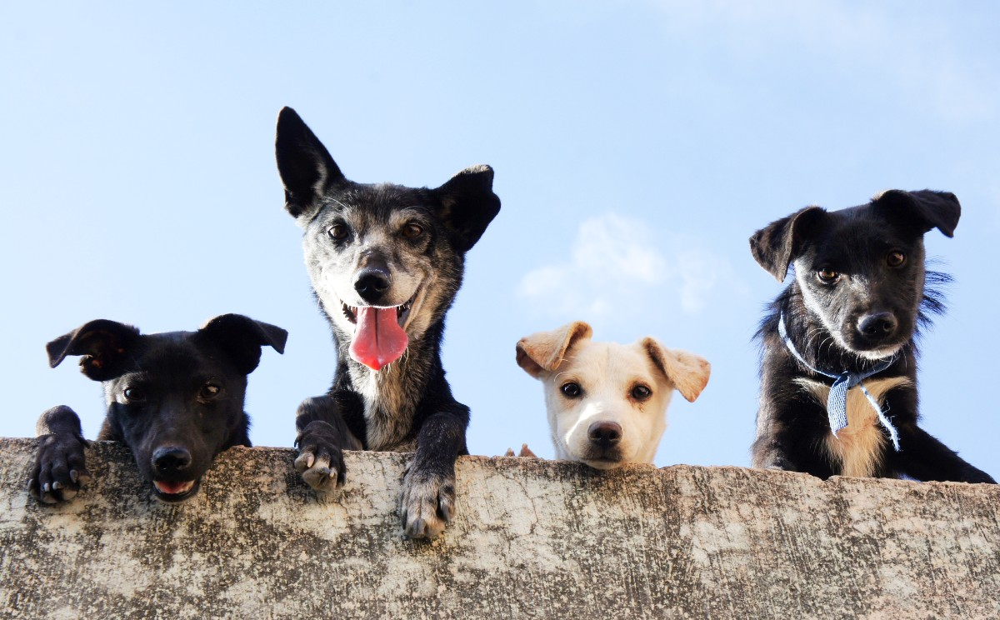
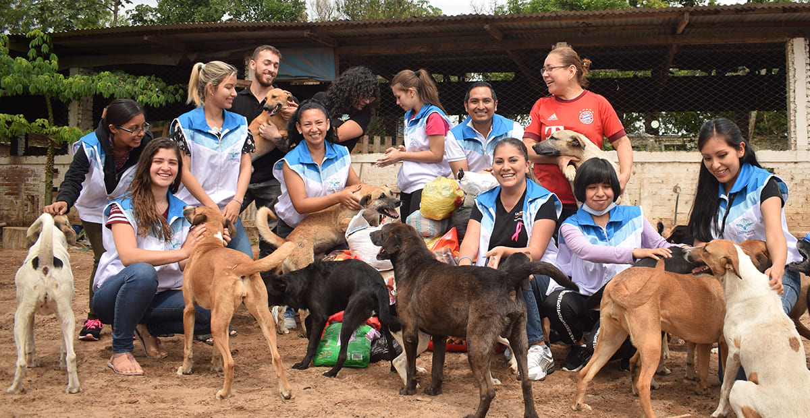
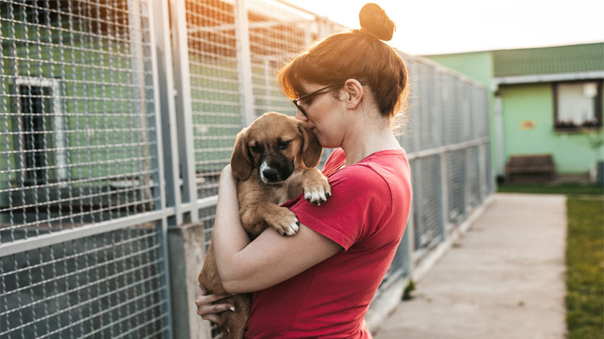
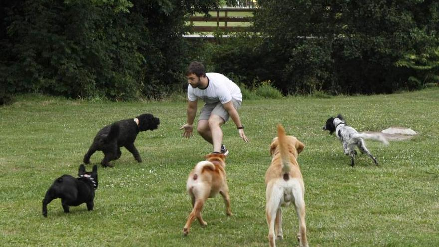
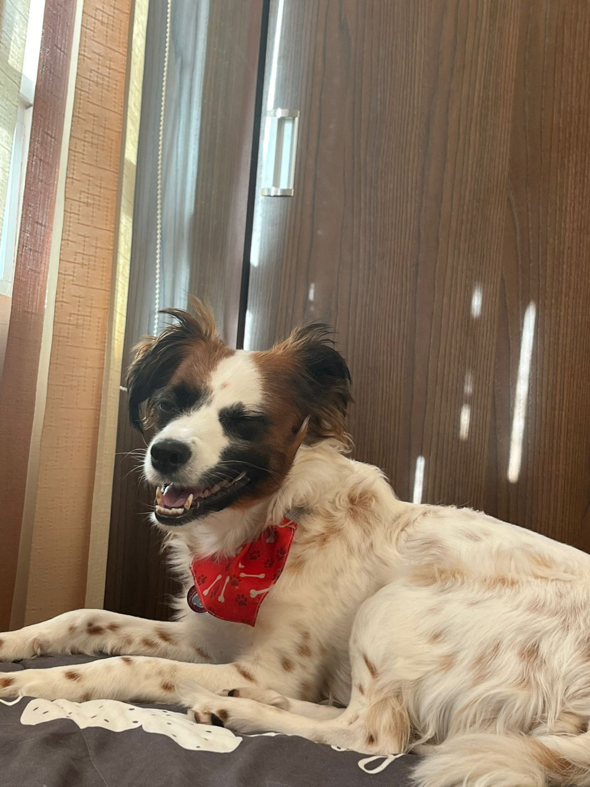
43
adoptados12
en adopción8
voluntarios
Inicio
Bienvenidos al Albergue Patitas, un refugio dedicado al corazón de Bolivia donde rescatamos, curamos y damos amor a perritos abandonados hasta encontrarles una familia para siempre. Cada ladrido aquí es una historia de esperanza.
¿Quiénes somos?
Somos un grupo de voluntarios bolivianos que desde 2018 luchando contra el abandono y maltrato animal. Esterilizamos, vacunamos y rehabilitamos a cientos de perritos callejeros para que tengan una segunda oportunidad. ¡Tu apoyo hace la diferencia!
Voluntarios
¿Cómo ser voluntario en nuestro albergue?
¡Es súper fácil! Solo tienes que escribirnos por Instagram, Facebook o WhatsApp y decirnos: “Quiero ayudar”. No importa tu edad (si eres menor de edad, puedes venir acompañado de un adulto), no necesitas experiencia previa ni estudios especiales. Lo único que sí necesitamos es tu corazón grande y muchas ganas de hacer la diferencia. Te daremos una pequeña inducción el primer día, te presentaremos a los peluditos y desde ahí ya formas parte de la familia Patitas. Puedes venir los fines de semana, entre semana después del trabajo o la universidad, o incluso solo unas horitas al mes… ¡cada minuto que nos regales es oro para ellos!
Tareas principales de voluntario
Alimentar, limpiar y cuidar a los perritos todos los días.
Sacar a pasear y socializar para que estén listos para su nuevo hogar.
Ayudar en ferias de adopción y tomar fotos lindas.
Adóptame
Aquí no tienes “perros en adopción aquí tienes futuros mejores amigos que llevan meses (o años) soñando con alguien como tú. Cada foto que ves es un corazón que late fuerte detrás de esos ojitos: alguien que fue abandonado, maltratado o simplemente olvidado, pero que nunca dejó de creer que un día llegaría su familia de verdad.
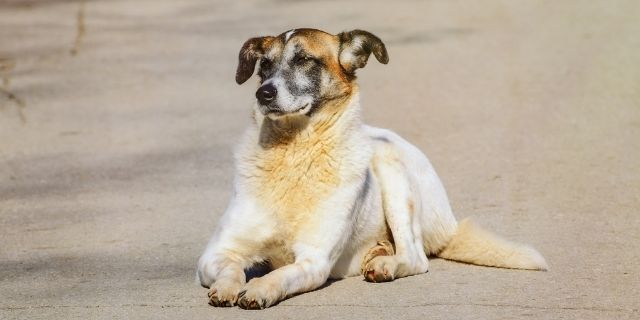
Tamalito
Mestizo mediano │ 2 años │ Macho
Super juguetón y guardián. Rescatado en el Ende.
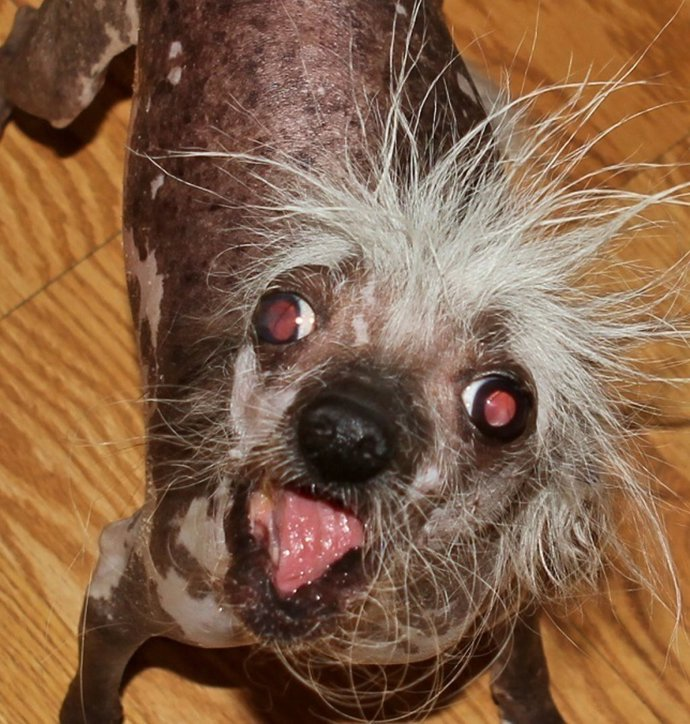
Panchito
Mestizo │ 3 años │ Macho
El más cariñoso del albergue. Le encanta dormir la siesta contigo.
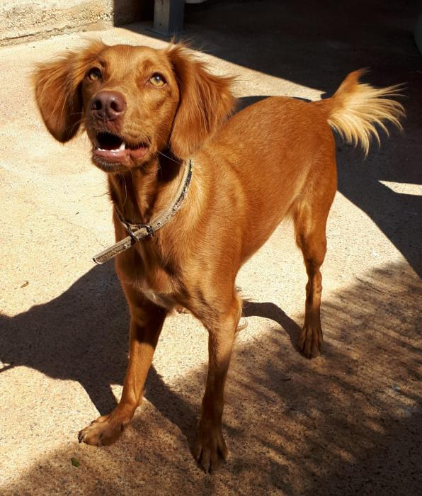
Canelita
Mestiza color canela │ 1.5 años │ Hembra
Muy inteligente, ya sabe sentarse y dar la pata.
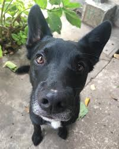
Negro
Mestizo grande │ 4 años │ Macho
Tranquilo y noble. Perfecto compañero para casa con patio.
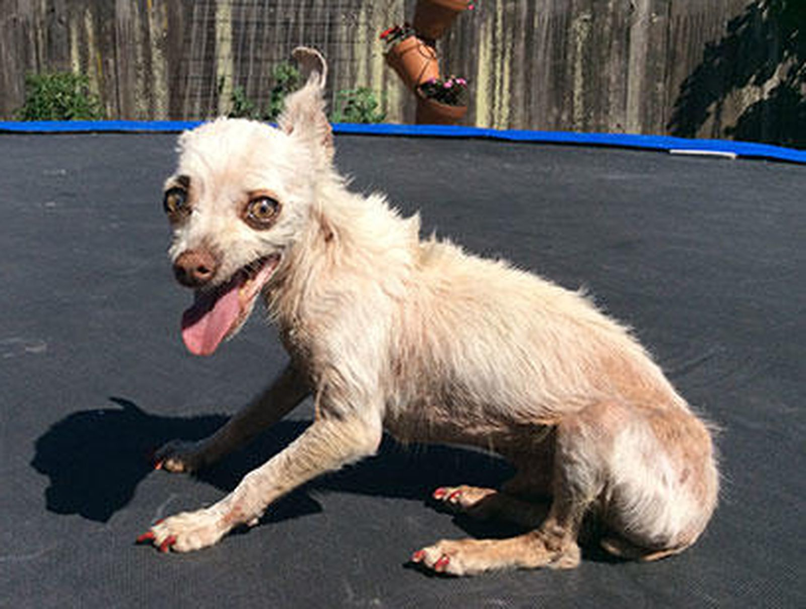
Blanquita
Mestiza pequeña │ 2 años │ Hembra
Tímida al principio, pero luego no se separa de ti.
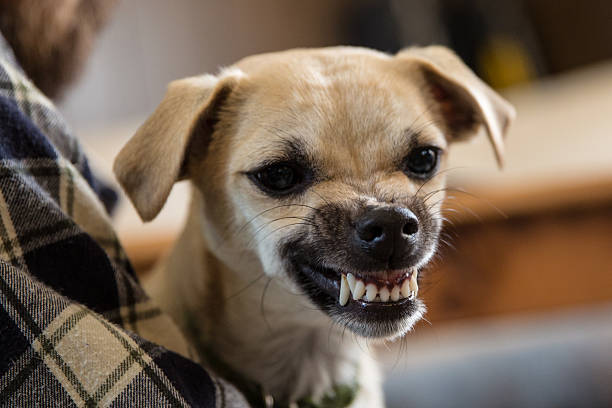
Princesa
Mestiza │ 1 año │ Hembra
Pequeña, elegante y super mimosa. Se lleva bien con niños.
Mira sus fotos otra vez. Detente en esos ojos. Uno de ellos ya te eligió desde que subimos su foto.
Donaciones
Cada boliviano que donas se transforma en comida, vacunas y esterilizaciones. También recibimos croquetas, medicamentos, frazadas y artículos de limpieza. ¡Gracias por ser la patita que nos ayuda a seguir!
- Comida (Croquetas o verduras)
- medicamentos
- juguetes
- utensilios para mascotas (Colchones, frazadas, platos, etc.)
- Articulos de limpieza